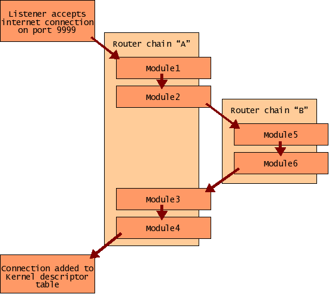

The router module plays a vital role in the SconeServer framework, as it is used to listen for and accept incoming connections, passing them on to the appropriate module(s) for processing. This is done by defining route chains, which list the module(s) to be notified in the event of a particular connection. Each entry in the route chain can also include any number of arguments, which are passed along to the module with the notification.
The module creates listeners where required. These accept any incoming connections and pass them directly to the router module along with the name of the associated route chain. The router module traverses the route chain, notifying each module in turn of the connection, passing along any associated arguments. Assuming each module responds positively, the connection is added to the SconeServer kernel.
It is possible to specify the router module itself within a route chain, specifying the name of another chain as an argument. The effect of this is that the other chain will be traversed at this point - returning to the original chain when finished. This is analogous to a subroutine in a programming language, and allows shared chains to be setup, which can be reused and maintained more easily in configuration files.
router.add("A")
router.A.add("module1"))
router.A.add("module2"))
router.A.add("router","B")
router.A.add("module3"))
router.A.add("module4"))
router.A.listen(ip.addr("*",9999))
router.add("B")
router.B.add("module5")
router.B.add("module6")
In this example, any incoming connections on port 9999 will be passed to the following modules in turn:

The router module itself is independent of the type of socket (address family or domain). Specific socket types are then implemented as plugins, which are usually loaded as sub-modules to the router module. Socket plugins simply implement a SconeScript method (usually called "addr"), which returns a socket address for that particular socket type. The documentation for each socket plugin should specify what parameters are required for its addr method.
The socket address returned by the plugin's addr method can then be passed to the listen method of the router chain (detailed below) to tell the router to listen on a particular address using the specified type of socket.
The following socket plugins are currently available:
TCP/IP Version 4 - The Internet Protocols, for making connections over the Internet. This is probably the only one most people will be interested in.
TCP/IP Version 6 - The next generation Internet Protocols.
Local (also called UNIX Domain) socket type, for making connections between processes running on the local machine. These types of sockets appear as a special type of file in the filesystem.
A short range radio communications protocol commonly used for connecting mobile devices and accessories.
In addition to the standard module interface, it also has the following:
Adds a new route chain.
Removes a route chain.
Lists the route chains.
Lookup route chain given by <route-name>.
Each route chain has the following interface:
Adds a new module to the route chain. Additional arguments are stored and passed to the module on connection.
Removes a module from the route chain.
Start listening on specifed address - any incoming connections will then be processed by this route chain.
Lists the modules in the chain.